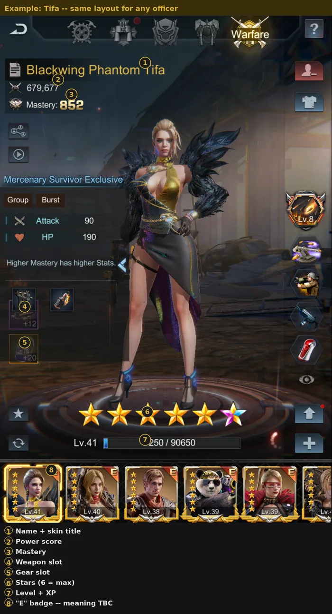
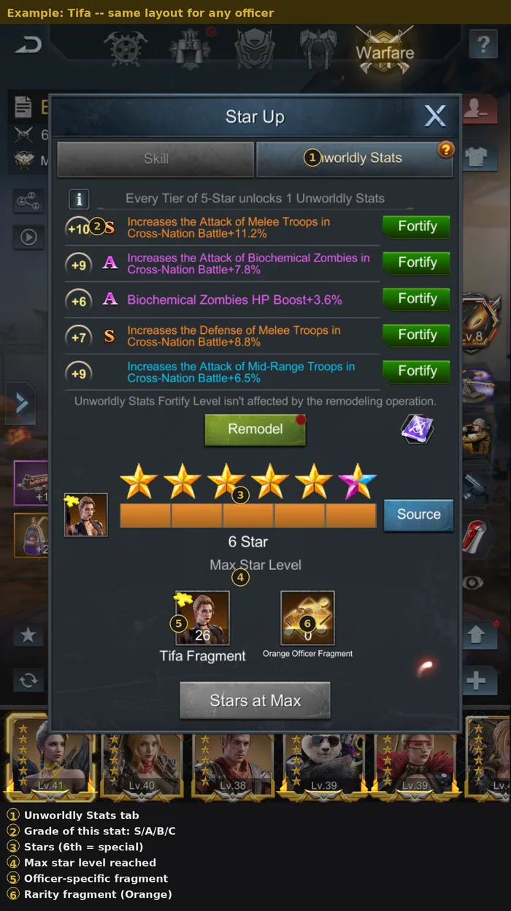
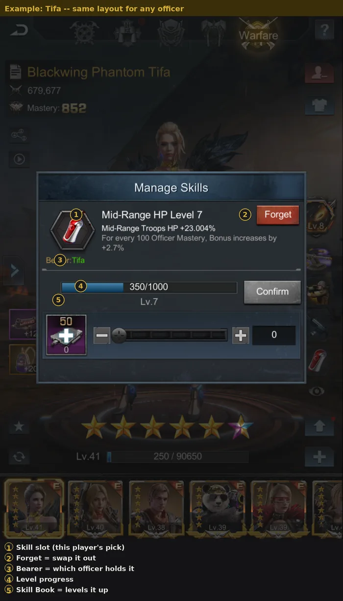

One explanation for every officer on this page — read it once here, not again on each one. Pick your level of detail below.

Example: Tifa — same layout for any officer. Tap a numbered circle for what it means.
Level
Raised with EXP items. The basic way any officer grows, a little at a time.
Stars
Raised with officer-specific shards. The main way any officer becomes stronger.
Base skill
Every officer's signature, fixed ability. Never upgraded with skill books — it only grows stronger through Mastery.
Role
Every officer belongs to one of five roles: Director, Strategy, Machinist, Drillmaster, or Warfare. What each role actually boosts — filling in soon.
Power
The single combined score that adds up everything about an officer.
Mastery
Not something you grind directly — a combined score from Level + Stars. The higher it is, the stronger every skill gets.
Skill slots
3-4 generic abilities any officer can carry. Levelled with Skill Books, swappable for a different one. This is a player's choice, not a fixed fact about the officer.
Rarity color
Confirmed ladder, lowest to highest: Blue, Purple, Orange. Orange is the rarest and strongest. Both Purple and Orange unlock Unworldly Stats — Orange just reaches a higher grade cap.

Example: Tifa — same layout for any officer. Tap a numbered circle for what it means.

Example: Tifa — same layout for any officer. Tap a numbered circle for what it means.
Breakthrough skill
The strongest, most unique ability an officer has. Upgraded with fragments (theirs plus a generic type), not skill books.
Skin
A cosmetic upgrade — new look and title — that also carries its own small skill bonus.
Equipment
Two separate gear slots (weapon + gear), each with its own enhancement level. A system of its own, on top of everything above.
Equipment expertise
A separate perk system on top of Equipment Level — abilities like Advanced Endurance or Titan Resistance, upgraded independently.
Unworldly Stats
Unlocks one extra stat every 5-star tier, graded low to high: A, AA, S, SS, SSS. Orange officers can reach SSS; Purple officers cap at AA. With enough Unworldly Cards you pick the exact stat and grade directly (cost rises per grade); without enough, you reroll randomly instead.
Unworldly Skills
A second, separate skill system on top of Skill slots, unlocked at 5-star tier. From then on, every 5 shards earned toward the next star grants one automatically — which you then choose how to spend. For Warfare officers the pool leans toward Cross-Nation Battle Attack, Cross-Nation Melee HP and Defense, Melee HP, Attack, and damage reduction against Mid/Long-Range Attackers.
Role is fixed
Unlike skill slots, an officer's role never changes — it's part of who they are, not a build choice. The five roles: Director, Strategy, Machinist, Drillmaster, Warfare.
Profile: Tifa — one player's actual officer, not the general rule
Tifa
Skin equipped: Blackwing Phantom
Lv.416★Role: WarfareMastery 852Power 679,677
Base skill
Advanced Kill
All Troops Attack +34.08%. Grows only with Mastery (+4% per 100).
Skill slots — this player's picks (Mid-Range Attack build)
Mid-Range Attack — Lv.16
Mid-Range Troops Attack +35.784%.
Mid-Range Expert — Lv.12
Mid-Range Troops Attack and HP +14.484%.
Mid-Range HP — Lv.7
Mid-Range Troops HP +23.004%.
Breakthrough skill
Air Support — Lv.8
Summons the Air Force to attack 6 enemy targets when attacking Commanders. Damage = surviving troops × 16. Cooldown 12 sec.
Equipment
Weapon +12, Gear +20 — a separate enhancement system, upgraded on its own.
This is one Mid-Range Attack build. A Long-Range or Zombie-focused player could put completely different skills in Tifa's three open slots — the base skill and Breakthrough skill stay the same either way, but the middle section is always a choice.